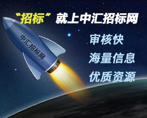

<!DOCTYPE html>
<html lang="en">

<head>
    <meta charset="UTF-8">
    <meta name="viewport" content="width=device-width, initial-scale=1.0">
    <meta http-equiv="X-UA-Compatible" content="ie=edge">
    <title>画布</title>
    <style>
        @keyframes suofang {
            from {
                transform: scale(1);
                opacity: 1;
            }

            to {
                transform: scale(1.1);
                opacity: 0;
            }
        }

        #canvas1 {
            animation: suofang 2.5s linear infinite;
        }

        /* #canvas {
            animation: suofang 2.5s linear infinite;
        } */
    </style>
</head>

<body onload="draw('canvas'),dd('canvas1'),bb('canvas3'),aa('canvas4'),ee('canvas5'),Draw('canvas7')">
    <!--  -->
    <!-- <div id="canvas"></div> -->
    <canvas id="myCanvas" width="200px" height="100px" style="display:block;"></canvas>
    <canvas id="canvas" width="600px" height="500px" style="display:block;"></canvas>
    <canvas id="canvas1" width="300px" height="300px" style="display:block;"></canvas>
    <canvas id="canvas2" width="300px" height="300px" style="display:block;"></canvas>
    <canvas id="canvas3" width="300px" height="200px" style="display:block;"></canvas>
    <canvas id="canvas4" width="300px" height="200px" style="display:block;"></canvas>
    <canvas id="canvas5" width="300px" height="200px" style="display:block;"></canvas>
    <canvas id="canvas9" style="display:block;"></canvas>
    <canvas id="canvas7" width="400px" height="300px" style="display:block;"></canvas>
    <canvas id="canvas8" width="200px" height="200px" style="display:block;"></canvas>
    <div id="container">
        <canvas id="canvas6" width="600px" height="600px" style="display:block;"></canvas>
    </div>
    <canvas id="canvas10" style="border: 1px solid" width="600px" height="300px" style="display:block;"></canvas>
    <script>
        //望远镜效果
        function draw(id) {
            var canvas = document.getElementById(id);
            if (canvas == null) {
                return false;
            }
            var context = canvas.getContext("2d");
            context.fillStyle = "#eeeeef";
            context.fillRect(0, 0, 600, 500);
            for (var i = 0; i <= 10; i++) {
                context.beginPath();
                context.arc(i * 25, i * 25, i * 10, 0, Math.PI * 2, true);
                context.closePath();
                context.fillStyle = "rgba(255,0,0,0.25)";
                context.fill();
            }
        }
        // 万花筒效果
        function dd(id) {
            var canvas = document.getElementById(id);
            if (canvas == null) {
                return false;
            }
            var context = canvas.getContext("2d");
            context.fillStyle = "#fff";
            context.fillRect(0, 0, 300, 300);
            var dx = 150, dy = 150, s = 100;
            context.beginPath();
            context.fillStyle = "rgba(255,0,0,0.4)";
            context.strokeStyle = "rgb(255,255,255)";
            var x = Math.sin(0),
                y = Math.cos(0),
                dig = Math.PI / 15 * 11;
            for (var i = 0; i < 30; i++) {
                var x = Math.sin(i * dig);
                var y = Math.cos(i * dig);
                context.lineTo(dx + x * s, dy + y * s);
            }
            context.closePath();
            context.fill();
            context.stroke();
        }
        var canvas = document.getElementById('canvas2');
        var context = canvas.getContext("2d");
        var ball1 = {
            x: 10,
            y: 100,
            dir_x: 5,
            dir_y: 5
        }
        // 球在区域运动
        setInterval(cc, 10);
        function cc() {

            context.fillStyle = "#ccc";
            context.fillRect(0, 0, 300, 300);
            context.beginPath();
            context.arc(ball1.x, ball1.y, 7, 0, Math.PI * 2, true);
            context.fillStyle = "red";
            context.fill();
            //让球动起来
            ball1.x += ball1.dir_x;
            ball1.y += ball1.dir_y;
            if (ball1.x < 0 || ball1.x > 300) {
                ball1.dir_x *= -1;
            }
            if (ball1.y < 0 || ball1.y > 300) {
                ball1.dir_y *= -1;
            }

        }
        //九宫格
        function bb(id) {
            var ctx = document.getElementById('canvas3').getContext('2d');
            for (var i = 0; i < 3; i++) {
                for (var j = 0; j < 3; j++) {
                    ctx.save();
                    ctx.fillStyle = 'rgb(' + (51 * i) + ', ' + (255 - 51 * i) + ', 255)';
                    ctx.translate(10 + j * 50, 10 + i * 50);
                    ctx.fillRect(0, 0, 25, 25);
                    ctx.restore();
                }
            }
        }
        //小球圆状排列
        function aa(id) {
            var ctx = document.getElementById('canvas4').getContext('2d');
            ctx.translate(75, 75);
            setInterval(function () {
                for (var i = 1; i < 6; i++) {
                    ctx.save();
                    ctx.fillStyle = 'rgb(' + (51 * i) + ', ' + (255 - 51 * i) + ', 255)';
                    for (var j = 0; j < i * 6; j++) {
                        ctx.rotate(Math.PI * 2 / (i * 6));
                        ctx.beginPath();
                        ctx.arc(0, i * 12.5, 5, 0, Math.PI * 2, true);
                        ctx.fill();
                    }
                    ctx.restore();
                }
            }, 1000)

        }
        // 随机星星排列
        function ee(id) {
            var ctx = document.getElementById('canvas5').getContext('2d');
            ctx.fillRect(0, 0, 200, 200);
            ctx.translate(100, 100);
            //圆
            ctx.beginPath();
            ctx.arc(0, 0, 60, 0., Math.PI * 2, true);
            ctx.clip();
            //背景
            var lingrad = ctx.createLinearGradient(0, -100, 0, 100);
            lingrad.addColorStop(0, '#232256');
            lingrad.addColorStop(1, '#143778');
            ctx.fillStyle = lingrad;
            ctx.fillRect(-100, -100, 200, 200);
            //星星
            for (var j = 1; j < 50; j++) {
                ctx.save();
                ctx.fillStyle = '#fff';
                ctx.translate(100 - Math.floor(Math.random() * 200), 100 - Math.floor(Math.random() * 200));
                drawStar(ctx, Math.floor(Math.random() * 4) + 2);
                ctx.restore();
            }
        }
        //绘制星星
        function drawStar(ctx, r) {
            ctx.save();
            ctx.beginPath();
            ctx.moveTo(r, 0);
            for (var i = 0; i < 9; i++) {
                ctx.rotate(Math.PI / 5);
                if (i % 2 == 0) {
                    ctx.lineTo((r / 0.525731) * 0.200811, 0);
                } else {
                    ctx.lineTo(r, 0);
                }
            }
            ctx.closePath();
            ctx.fill();
            ctx.restore();
        }
        //原生js手势解锁
        //画实心圆
        function drawSolidCircle(ctx, color, x, y, r) {
            ctx.fillStyle = color;
            ctx.beginPath();
            ctx.arc(x, y, r, 0, Math.PI * 2, true);
            ctx.closePath();
            ctx.fill();
        }
        //画线段
        function drawLine(ctx, color, x1, y1, x2, y2) {
            ctx.strokeStyle = color;
            ctx.beginPath();
            ctx.moveTo(x1, y1);
            ctx.lineTo(x2, y2);
            ctx.stroke();
            ctx.closePath();
        }
        const canvas6 = document.querySelector('#canvas6')
        const ctx6 = canvas6.getContext('2d');
        let width = container.getBoundingClientRect().width;
        canvas6.width = canvas6.height = width;
        // console.log(width);
        // console.log(container)
        let n = 3, r = Math.round(width / (n + 1) / 5), color = '#676';
        let range = Math.round(width / (n + 1));
        let circles = [];
        for (var i = 1; i <= n; i++) {
            for (var j = 1; j <= n; j++) {
                let y = range * i,
                    x = range * j;
                drawSolidCircle(ctx6, color, x, y, r);
                circles.push({ x, y });
            }
        }
        let lineTo = drawLine.bind(null, ctx6, color);
        (function (...path) {
            path.reduce((p1, p2) => {
                lineTo(p1.x, p1.y, p2.x, p2.y);
                return p2;
            });

        })(circles[0], circles[1], circles[3], circles[5], circles[8], circles[7]);
        //地月运动
        var sun = new Image();
        var moon = new Image();
        var earth = new Image();
        function init() {
            sun.src = 'https://mdn.mozillademos.org/files/1456/Canvas_sun.png';
            moon.src = 'https://mdn.mozillademos.org/files/1443/Canvas_moon.png';
            earth.src = 'https://mdn.mozillademos.org/files/1429/Canvas_earth.png';
            window.requestAnimationFrame(Draw);
        }
        //
        function Draw(id) {
            var ctx = document.getElementById('canvas7').getContext('2d');
            ctx.globalCompositeOperation = 'destination-over';
            ctx.clearRect(0, 0, 300, 300);//clear canvas
            ctx.fillStyle = 'rgba(0,0,0,0.4)';
            ctx.strokeStyle = 'rgba(0,153,255,0.4)';
            ctx.save();
            ctx.translate(150, 150);
            //地球
            var time = new Date();
            ctx.rotate(((2 * Math.PI) / 60) * time.getSeconds() + ((2 * Math.PI) / 60000) * time.getMilliseconds());
            ctx.translate(105, 0);
            ctx.fillRect(0, -12, 30, 24);//shadow
            ctx.drawImage(earth, -12, -12);
            //月球
            ctx.save();
            ctx.rotate(((2 * Math.PI) / 60) * time.getSeconds() + ((2 * Math.PI) / 60000) * time.getMilliseconds());
            ctx.translate(0, 28.5);
            ctx.drawImage(moon, -3.5, -3.5);
            ctx.restore();

            ctx.restore();

            ctx.beginPath();
            ctx.arc(150, 150, 105, 0, Math.PI * 2, false);//earth orbit
            ctx.stroke();

            ctx.drawImage(sun, 0, 0, 300, 300);
            window.requestAnimationFrame(Draw);
        }
        init();
        // 动画时钟
        function clock() {
            var now = new Date();
            var ctx = document.getElementById('canvas8').getContext('2d');
            ctx.save();
            ctx.clearRect(0, 0, 150, 150);
            ctx.translate(75, 75);
            ctx.scale(0.4, 0.4);
            ctx.rotate(-Math.PI / 2);
            ctx.strokeStyle = "black";
            ctx.fillStyle = "white";
            ctx.lineWidth = 8;
            ctx.lineCap = "round";

            // Hour marks
            ctx.save();
            for (var i = 0; i < 12; i++) {
                ctx.beginPath();
                ctx.rotate(Math.PI / 6);
                ctx.moveTo(100, 0);
                ctx.lineTo(120, 0);
                ctx.stroke();
            }
            ctx.restore();

            // Minute marks
            ctx.save();
            ctx.lineWidth = 5;
            for (i = 0; i < 60; i++) {
                if (i % 5 != 0) {
                    ctx.beginPath();
                    ctx.moveTo(117, 0);
                    ctx.lineTo(120, 0);
                    ctx.stroke();
                }
                ctx.rotate(Math.PI / 30);
            }
            ctx.restore();

            var sec = now.getSeconds();
            var min = now.getMinutes();
            var hr = now.getHours();
            hr = hr >= 12 ? hr - 12 : hr;

            ctx.fillStyle = "black";

            // write Hours
            ctx.save();
            ctx.rotate(hr * (Math.PI / 6) + (Math.PI / 360) * min + (Math.PI / 21600) * sec)
            ctx.lineWidth = 14;
            ctx.beginPath();
            ctx.moveTo(-20, 0);
            ctx.lineTo(80, 0);
            ctx.stroke();
            ctx.restore();

            // write Minutes
            ctx.save();
            ctx.rotate((Math.PI / 30) * min + (Math.PI / 1800) * sec)
            ctx.lineWidth = 10;
            ctx.beginPath();
            ctx.moveTo(-28, 0);
            ctx.lineTo(112, 0);
            ctx.stroke();
            ctx.restore();

            // Write seconds
            ctx.save();
            ctx.rotate(sec * Math.PI / 30);
            ctx.strokeStyle = "#D40000";
            ctx.fillStyle = "#D40000";
            ctx.lineWidth = 6;
            ctx.beginPath();
            ctx.moveTo(-30, 0);
            ctx.lineTo(83, 0);
            ctx.stroke();
            ctx.beginPath();
            ctx.arc(0, 0, 10, 0, Math.PI * 2, true);
            ctx.fill();
            ctx.beginPath();
            ctx.arc(95, 0, 10, 0, Math.PI * 2, true);
            ctx.stroke();
            ctx.fillStyle = "rgba(0,0,0,0)";
            ctx.arc(0, 0, 3, 0, Math.PI * 2, true);
            ctx.fill();
            ctx.restore();

            ctx.beginPath();
            ctx.lineWidth = 14;
            ctx.strokeStyle = '#325FA2';
            ctx.arc(0, 0, 142, 0, Math.PI * 2, true);
            ctx.stroke();

            ctx.restore();

            window.requestAnimationFrame(clock);
        }

        window.requestAnimationFrame(clock);
        // 循环全景照片显示
        var img = new Image();
        img.src = 'https://mdn.mozillademos.org/files/4553/Capitan_Meadows,_Yosemite_National_Park.jpg';
        var CanvasX = 800, CanvasY = 200;
        var speed = 30,//lower is faster
            scale = 1.05, y = -4.5;//vertical offset
        //Main program
        var dx = 0.75, imgW, imgH, x = 0, clearX, clearY, ctx9;
        img.onload = function () {
            imgW = img.width * scale;
            imgH = img.height * scale;
            if (imgW > CanvasX) {
                x = CanvasX - imgW;
            }
            if (imgW > CanvasX) {
                clearX = imgW;
            } else {
                clearX = CanvasX;
            }
            if (imgH > CanvasY) {
                clearY = imgH;
            } else {
                clearY = CanvasY;
            }
            ctx9 = document.getElementById('canvas9').getContext('2d');
            return setInterval(drawImg, speed);
        }
        function drawImg() {
            ctx9.clearRect(0, 0, clearX, clearY);
            if (imgW <= CanvasX) {
                if (x > CanvasX) {
                    x = 0;
                }
                if (x > (CanvasX - imgW)) {
                    ctx9.drawImage(img, x - CanvasX + 1, y, imgW, imgH);
                }
            } else {
                if (x > CanvasX) {
                    x = CanvasX - imgW;
                }
                if (x > (CanvasX - imgW)) {
                    ctx9.drawImage(img, x - imgW + 1, y, imgW, imgH);
                }
            }
            ctx9.drawImage(img, x, y, imgW, imgH);
            x += dx;
        }

        // 鼠标控制小球移动
        var canvas10 = document.getElementById('canvas10');
        var ctx10 = canvas10.getContext('2d');
        var raf;
        var running = false;

        var ball = {
            x: 50,
            y: 50,
            vx: 5,
            vy: 1,
            radius: 25,
            color: 'blue',
            draw: function () {
                ctx10.beginPath();
                ctx10.arc(this.x, this.y, this.radius, 0, Math.PI * 2, true);
                ctx10.closePath();
                ctx10.fillStyle = this.color;
                ctx10.fill();
            }
        };

        function clear() {
            ctx10.fillStyle = 'rgba(255,255,255,0.3)';
            ctx10.fillRect(0, 0, canvas10.width, canvas10.height);
        }

        function dw() {
            clear();
            ball.draw();
            ball.x += ball.vx;
            ball.y += ball.vy;

            if (ball.y + ball.vy > canvas10.height || ball.y + ball.vy < 0) {
                ball.vy = -ball.vy;
            }
            if (ball.x + ball.vx > canvas10.width || ball.x + ball.vx < 0) {
                ball.vx = -ball.vx;
            }

            raf = window.requestAnimationFrame(dw);
        }

        canvas10.addEventListener('mousemove', function (e) {
            if (!running) {
                clear();
                ball.x = e.clientX;
                ball.y = e.clientY;
                ball.draw();
            }
        });

        canvas10.addEventListener('click', function (e) {
            if (!running) {
                raf = window.requestAnimationFrame(dw);
                running = true;
            }
        });

        canvas10.addEventListener('mouseout', function (e) {
            window.cancelAnimationFrame(raf);
            running = false;
        });

        ball.draw();
        // 背景颜色渐变显示
        var c = document.getElementById('myCanvas');
        var ctx = c.getContext('2d');
        ctx.fillStyle = '#fff'; //主体颜色
        ctx.fillRect(0, 0, 200, 100); //矩形
        // 创建渐变
        // var grd = ctx.createLinearGradient(0, 0, 200, 0);//渐变矩形
        var grd = ctx.createRadialGradient(75, 50, 5, 90, 60, 100); //渐变圆形
        grd.addColorStop(0, 'orange');
        grd.addColorStop(1, 'white');
        //填充渐变
        ctx.fillStyle = grd;
        ctx.fillRect(10, 10, 150, 80);
        // // 图像放在画布上
        // var img=document.getElementById('ad');
        // img.onload = function() {
        //     ctx.drawImage(img,10,10);
        // }
        // ctx.moveTo(0, 0);
        // ctx.lineTo(200, 100);//对角线
        // ctx.stroke();
        // ctx.beginPath();
        // ctx.arc(95, 50, 40, 0, 2 * Math.PI);//圆
        // ctx.stroke();
        // ctx.font="30px Arial";
        // ctx.fillText("Hello World",10,50);//字体
        // 二次元贝塞尔曲线
        // function draw() {
        //     var canvas = document.getElementById('myCanvas');
        //     if (!canvas.getContext) return;
        //     var ctx = canvas.getContext("2d");
        //     ctx.beginPath();
        //     ctx.moveTo(10, 200); //起始点
        //     var cp1x = 40, cp1y = 100;  //控制点
        //     var x = 200, y = 200; // 结束点
        //     //绘制二次贝塞尔曲线
        //     ctx.quadraticCurveTo(cp1x, cp1y, x, y);
        //     ctx.stroke();

        //     ctx.beginPath();
        //     ctx.rect(10, 200, 10, 10);
        //     ctx.rect(cp1x, cp1y, 10, 10);
        //     ctx.rect(x, y, 10, 10);
        //     ctx.fill();
        // }
        // function draw() {
        //     var canvas = document.getElementById('myCanvas');
        //     if (!canvas.getContext) return;
        //     var ctx = canvas.getContext("2d");
        //     for (var i = 0; i < 6; i++) {
        //         for (var j = 0; j < 6; j++) {
        //             ctx.fillStyle = 'rgb(' + Math.floor(255 - 42.5 * i) + ',' +
        //                 Math.floor(255 - 42.5 * j) + ',0)';
        //             ctx.fillRect(j * 50, i * 50, 50, 50);
        //         }
        //     }
        // }
        // 圆弧案例
        // function draw() {
        //     var canvas = document.getElementById('myCanvas');
        //     if(!canvas.getContext) return;
        //     // // 案例1
        //     var ctx = canvas.getContext('2d');
            // ctx.beginPath();
            // ctx.arc(40,80,10,1,Math.PI / 2,true);
            // ctx.stroke();
            // 案例2
            // ctx.beginPath();
            // ctx.arc(50,50,40,0,Math.PI/2,false);
            // ctx.stroke();

            // ctx.beginPath();
            // ctx.arc(150,50,40,0,-Math.PI/2, true);
            // ctx.closePath();
            // ctx.stroke();

            // ctx.beginPath();
            // ctx.arc(50,150,40,0,-Math.PI/2,true);
            // ctx.fill();

            // ctx.beginPath();
            // ctx.arc(150,150,40,0,Math.PI,false);
            // ctx.fill();
        // }
        // draw();
    </script>
</body>

</html>